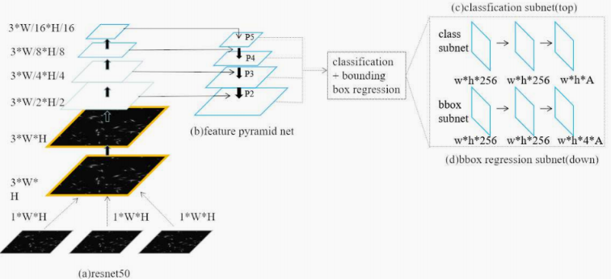
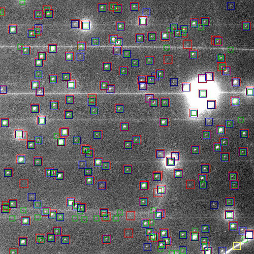
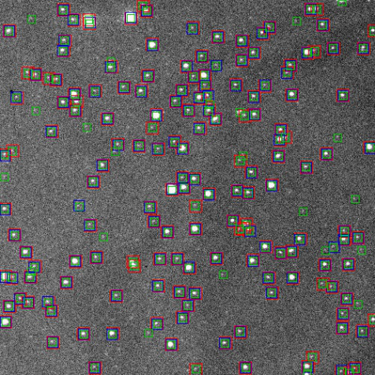
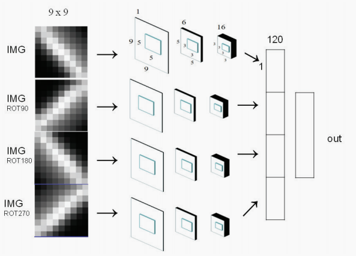
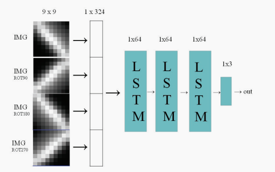
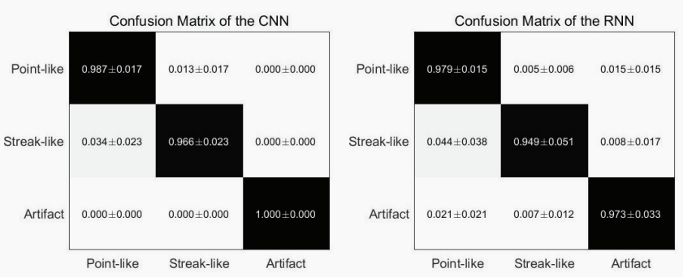
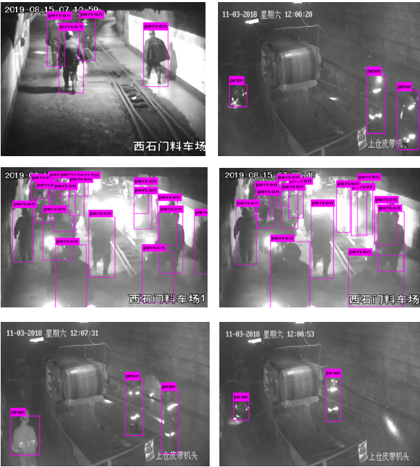
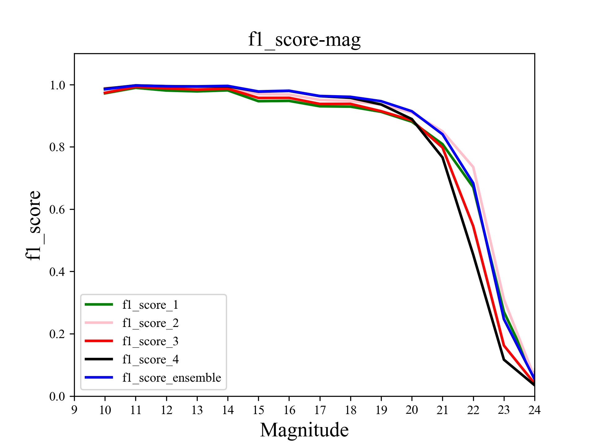

项目成果
基于Faster RCNN 的天文目标检测
项目描述
利用通用目标检测框架应用在天文领域。首先在数据和标签可操控性高的模拟数据进行， 由天文工具 Skymaker 生成，对原始网络架构进行改进， 模型拟合后，处理真实数据并搭建标注 平台获得标签，做迁移学习，最后和传统方法（SE）比较探测能力来评价神经网络的探测能力。
职责&业绩
- 模拟近似真实的数据和标签（特殊方法），搭建图像标注平台网站为真实数据制作标签；
- 针对通用目标和天文目标异同，目标检测框架改进以达到拟合，对检测框架设计理解深刻；
- 真实数据做迁移学习，神经网络相比天文领域目标探测传统方法提升 25%，部署于嵌入式端。
- 切入点&困难：a.通用目标->天文领域；b.网络改进；c.迁移学习策略；d.嵌入式端 qt 界面；




基于深度学习的天文图像分类识别
项目描述
对 1000 张施密特望远镜拍摄的天文图像处理，使用天文工具 SE 扫图得到定位目标，最 后“抠图”得到分类对象为星象：噪点：空间碎片 约 100 : 10 : 1 三类组成的数据集。对比神经网络（CNN & RNN）在低信噪比下的强分类效果，采用一系列分类评价指标，验证擅长处理序列的 RNN 处理图像数据时也具有较好分类效果。
职责&业绩
- 数据获取+数据清洗（计算 SNR 和 Ellipticity 筛选）+数据增强（解决类别不平衡问题）；
- 自主搭建 CNN(Lenet5)和 RNN（LSTM）对比分类已有数据，验证 RNN 也具有强分类能力；
- 由于数据自身特性，CNN 分类 acc-98.6%，RNN 分类 acc-97.3%，集成学习后 acc-99.0%。
- 切入点&困难：a.CNN 与 RNN 比较；b. RNN 效果改进问题；c.类别不平衡问题；d.集成问题；



矿井下人的分布式探测与跟踪
项目描述
针对矿井下人工监控可持续时间短，易疲劳；多监控视频观察难，数据量大的特点。基于煤矿视频制作数据集， 提出将 YOLOv3(后续有尝试 yolov4/5) 应用于井下矿工多目标检测。完成一个多摄像头下的目标跟踪系统，实现持续检测及跟踪人物和为矿井下事故实时预警。
职责&业绩
- 背景帧差法处理数据、使用 JS 搭建标注平台、并行化标注数据；
- 运用 yolo 系列算法完成多目标检测，运用 DeepSort 算法对视频数据进行跟踪处理，标签聚类；
- 单张图片检测时间为 0.03S，视频检测达到 15FPS，且检测 AP 达 86 % 以上；
- 嵌入式设备下跟踪效果可达 9 FPS，MOTA 60% 左右；
- 切入点&困难：a. 数据处理；b. 跟踪 label 聚类；c. 模型加速；

望远镜阵列下的天文目标协同检测
项目描述
在单望远镜对天文目标检测基础之上，拓展多望远镜下的天文目标协同探测。利用天文工具SkyMaker 准备 4 个不同参数下的望远镜的模拟数据，同时送入网络进行训练， 依据 Adaboost 算法，对四个望远镜的探测结果进行综合，得到最终的探测结果。针对真实数据，先利用图像配准将四个望远镜数据配准，然后制作标签，同模拟数据进行迁移学习训练。
职责&业绩
- 参数设计，数据准备；
- 依据 adaboost 设计算法，完成训练；
- 对真实图像做图像配准，后制作标签进行迁移学习；
- 多望远镜的协同检测效率相比单望远镜在查全率与查准率提升 17% 以上；
- 切入点&困难：a. 方案设计；b.adaboost 算法应用；c. 图像配准效果。
